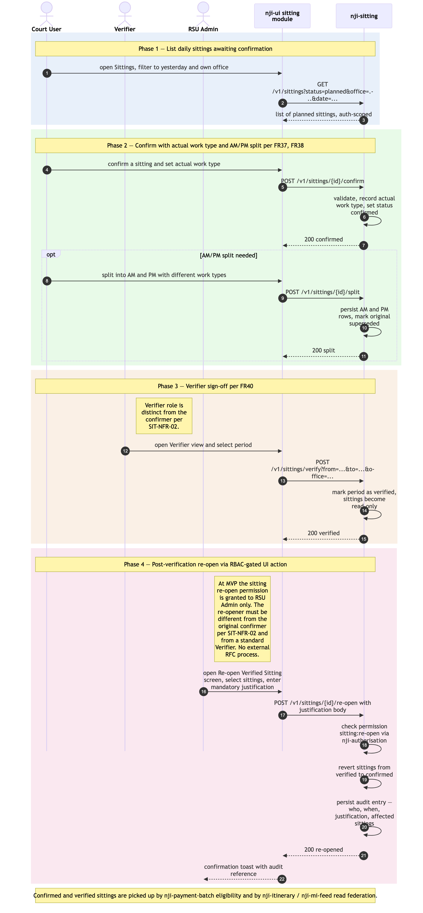

Salaried sitting confirmation + verifier sign-off
Sequence diagram of the daily salaried-sitting confirmation flow: a
Court User confirms that yesterday's planned sittings actually took
place, recording actual work type and splitting AM/PM where relevant; a
Verifier later signs off the period, which makes the data read-only.
Post-verification amendments are handled inside the UI by a
re-open action gated by RBAC — not by an out-of-system
RFC ticketing process (revised 2026-05-11). This is distinct from the
booking-confirmation step shown in ./absence-to-reconciliation.md
Phase 4 — that diagram covers fee-paid bookings; this one
covers salaried sittings.
Confirmed-and-verified salaried sittings feed ./payment-batch-flow.md
Phase 2 (alongside confirmed fee-paid bookings) for fee-paid recorder
cases, and feed ./itinerary-federated-read.md
and ./mi-feed-and-reports-consumption.md
as utilisation data.
The as-is equivalent is Module 10 Sittings in ../../../docs/architecture/asis/functional-modules.md
and Integration Flow 3 Sitting & Booking Confirmation in ../../../docs/architecture/asis/integration-dependencies.md.
Four phases: (1) list daily sittings awaiting confirmation; (2) confirm with actual work type + AM/PM split; (3) Verifier sign-off; (4) post-verification re-open via RBAC-gated UI action.
Not in this diagram
- Fee-paid booking confirmation — distinct flow in
./absence-to-reconciliation.mdPhase 4 (POST /v1/bookings/{id}/confirm). - Ad-hoc sitting creation (FR39) — a small follow-up CRUD; same shape as Phase 2 with a different starting point.
- Sittings → Payments handoff — Phase 2 of
./payment-batch-flow.mdshows the batch reading confirmed bookings + sittings; not duplicated here. - Working-pattern generation of the planned sittings being
confirmed — see
./judge-onboarding-and-sitting-generation.mdPhase 3. - External Request-for-Change ticketing — does not exist in NJI (revised 2026-05-11). Post-verification amendment is a UI action gated by RBAC, with mandatory justification captured in-form and full audit. The legacy APEX "RFC" external workflow is retired.
Cross-cutting steps omitted for clarity
- Authentication + per-request authorisation — Court
User's and Verifier's JWTs are validated by
nji-sitting'sJWTFilteron every call; role gating (only authorised roles can confirm; only Verifiers can verify; a Verifier cannot also be the original confirmer per SIT-NFR-02). See./user-authentication-and-authorisation.md. - All UI → service calls flow through Azure API Management.

Source: ./salaried-sitting-confirmation.mmd
(Mermaid). Regenerate with
mmdc -i salaried-sitting-confirmation.mmd -o salaried-sitting-confirmation.png -w 2400 -s 2 --backgroundColor white.
Phase summary
| Phase | Driver | Architectural rule | Outcome |
|---|---|---|---|
| 1 — List daily sittings awaiting confirmation | Court User | FR36 — filter by Region/Office/judge/date range; auth scope-gated by
nji-authorisation |
UI shows the list of planned sittings for the user's
scope |
| 2 — Confirm with actual work type + AM/PM split | Court User | FR37 + FR38 — set outcome (confirmed / cancelled / rejected), update actual work type, split into AM/PM rows where applicable; once-per-sitting natural-key idempotency | Sitting status = confirmed (or cancelled/rejected);
actual work type recorded; split rows persisted if applicable |
| 3 — Verifier sign-off | Verifier (Read-only / Verifier role) | FR40 — verifier different from confirmer (SIT-NFR-02); marks the period as verified | Sitting becomes read-only; visible to payment-batch eligibility (Recorder fee-payment cases) and to MI Feed as verified utilisation data |
| 4 — Post-verification re-open (RBAC-gated) | RSU Admin (the sitting:re-open permission is granted to
RSU Admin only at MVP; distinct from the original confirmer per
SIT-NFR-02 and from a standard Verifier) |
FR40 (revised 2026-05-11) — verified data is read-only;
re-opening is a UI action requiring the sitting:re-open
permission, captures a mandatory justification, and is fully audited. No
external RFC ticketing. |
Specified sittings revert from verified to confirmed for amendment; justification recorded; audit entry written |
Where to find more detail
| Detail | Location |
|---|---|
nji-sitting repo purpose and key functions |
../repository-strategy.md
Phase 5 row |
| Sitting confirmation semantics (planned / confirmed / cancelled / rejected / verified; AM/PM split; work-type override) | PRD FR35–FR40; Module 10 in ../../../docs/architecture/asis/functional-modules.md |
| Sittings table schema | ../data-tables.md |
| Sitting UI module structure | ../repo-structure.md →
nji-ui/src/modules/sitting/ |
| Payment-batch eligibility (the downstream consumer of confirmed sittings) | ./payment-batch-flow.md
Phase 2 |
| Itinerary read federation that displays confirmed/verified sittings | ./itinerary-federated-read.md |
| As-is equivalent (Module 10 Sittings; Integration Flow 3) | ../../../docs/architecture/asis/functional-modules.md
→ Module 10; ../../../docs/architecture/asis/integration-dependencies.md
→ Flow 3 |
Source: _bmad-output/planning-artifacts/architecture/sequence-diagrams/salaried-sitting-confirmation.md